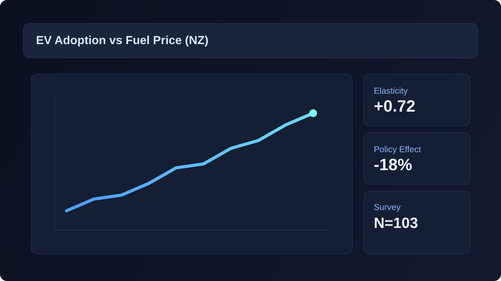
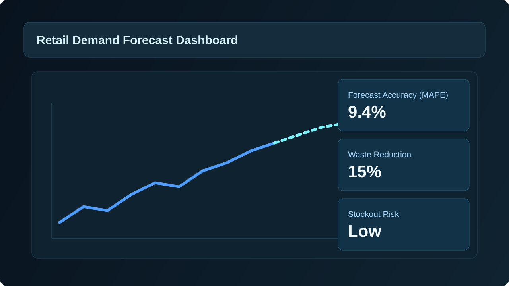
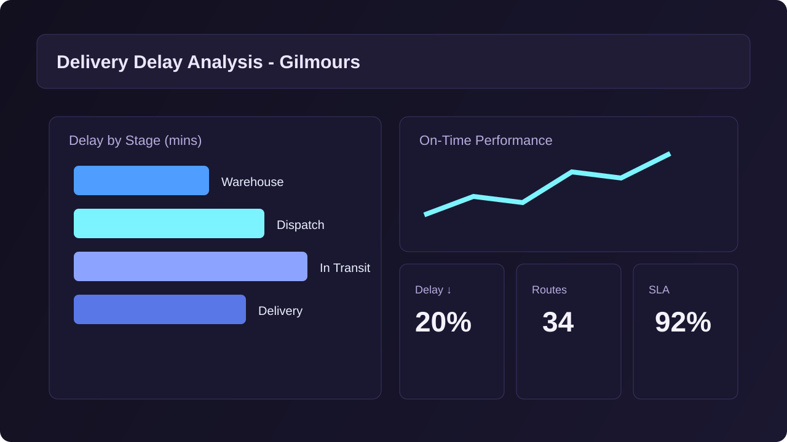
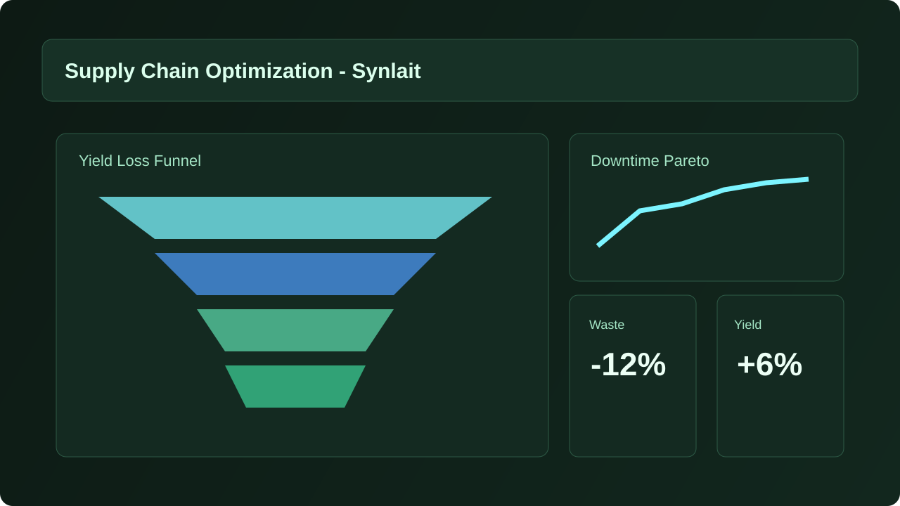
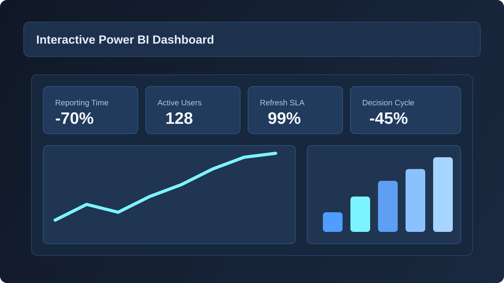

AI Delivery
Projects
Selected projects across business analysis, AI, forecasting, and supply chain strategy.
Portfolio Graph
Project impact, technical depth, and business relevance snapshot
Business Impact
Technical Stack Breadth
Data Storytelling
AI CV Assistant
AI-powered resume optimization assistant for ATS improvement, cover letter generation, and candidate readiness.
Gemini API
Claude API
Prompt Engineering
AI Business Intelligence Copilot
AI-driven analytics assistant that converts uploaded business data into insight summaries and BI recommendations.
Python
SQL
Power BI

Master's Thesis: Fuel Prices & EV Demand (NZ)
Quantitative research combining econometric analysis, consumer survey data, and real-world EV ownership testing to examine adoption drivers in New Zealand.
Thesis
Econometrics
Policy Analysis

AI-Powered Retail Demand Forecasting System
Designed and validated a Python forecasting workflow that translated demand signals into planning recommendations for inventory and replenishment decisions.
Python
Prophet
Explainable AI

Gilmours Workflow Analysis & Process Redesign
Mapped the end-to-end delivery process, identified operational bottlenecks, and built a recommendation set focused on service reliability, route performance, and execution discipline.
Process Mapping
Change Impact
Stakeholder Analysis

Synlait Milk Supply Chain Optimisation
Assessed production and supply chain inefficiencies, prioritised improvement opportunities, and shaped recommendations linking operational performance with sustainability goals.
Operations
Design Thinking
Business Case

Generative AI Business Process Automation
Built controlled generative AI workflows for reporting and analysis tasks, combining prompt design, review checkpoints, and measurable process-improvement targets.
Claude API
OpenAI API
Agentic Workflows
Genesis Energy: Supply Chain Analysis and Recommendations
Analysed Genesis Energy's fuel, generation, transmission, and retail operating model, then developed recommendations around resilience, renewable integration, and planning capability.
Supply Chain
Energy
Strategy